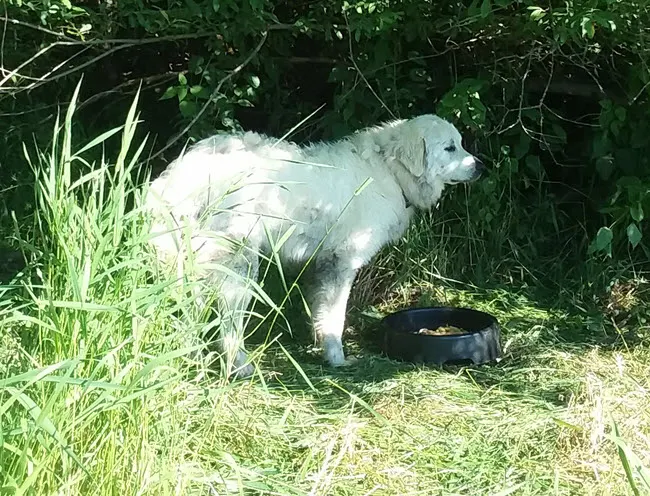
“Atticus Finch”
Half Maremma, one quarter each Anatolian Shepherd and Great Pyrenees. Sweet with people, calm around the sheep, with a good eye for coyotes.
A small family farm in Snohomish, Washington
Our Katahdin sheep graze open pasture year-round on part of the old Glenwood homestead, guarded by our livestock protection dogs.
Visitors welcome, by appointment only, please.
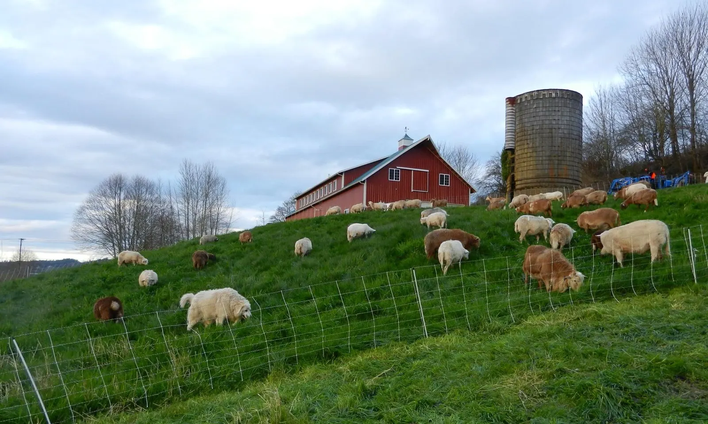
Our property is part of a very old and picturesque farm, originally homesteaded by the Hoem Family in the 1880s and called Glenwood. This farm has housed dairy and beef cows, sheep, other livestock and row crops for more than a century!
Though much of the original homestead is lost to the forces of time and Mother Nature, we are very proud to be continuing a long tradition of family agriculture in the fertile Snohomish River Valley.
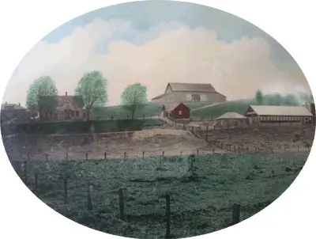
Our grass-fed Katahdin lamb is incredibly tender and flavorful. We typically butcher lambs at six to twelve months old, in the fall and winter, and they hang at about 45 pounds. Earlier in the season we can sell younger, smaller lambs for a whole lamb celebration meal.
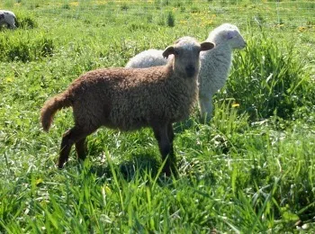
Lambs on pasture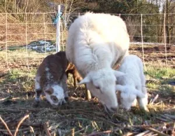
A ewe and her lambsOur sheep eat grass and grass hay year-round as the large majority of their diet, with mineral supplements matched to the lab analysis of our grass.
No concrete feedlot, no long transport. They spend their lives on pasture and are slaughtered humanely by a local butcher, minutes from home.
Most of the lamb in the U.S. is shipped all the way from Australia. Buying local is the most environmentally friendly way to purchase meat.
You go straight to the grower and pay the local butcher directly, which saves you about 20% over lamb from the grocery store.
Our local butcher cuts and wraps your lamb to your preferences. For Halal or Kosher practices, we can work with you to meet your needs.
Katahdins are bred only for meat. Their short hair coat sheds each year, just like wild sheep, so they need no shearing. We often have breeding sheep for sale, both ewes and rams.
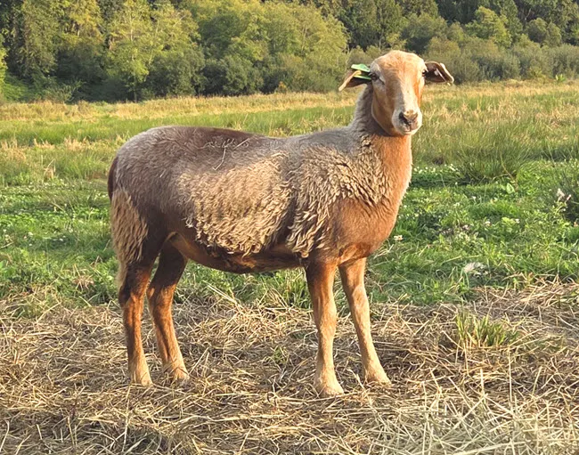
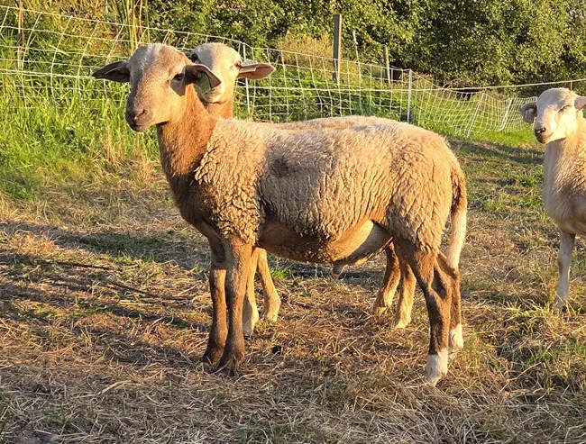
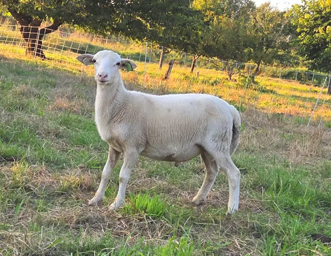
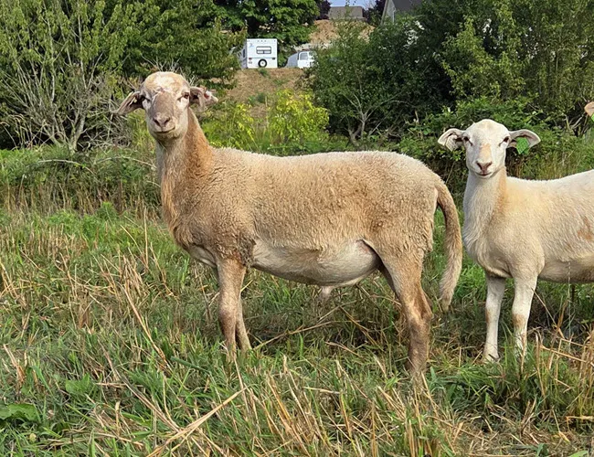
All registered with Katahdin Hair Sheep International, and enrolled in the USDA Scrapie Flock Certification Program. Our breeding rams are usually DNA-typed “RR.”
Open graze, outdoors, all year. Some whole grain while ewes are pregnant and nursing, and always-available mineral salts and kelp. We can watch them from our kitchen window.
A $100 non-refundable deposit per head holds an animal. I can deliver up to an hour’s drive from Snohomish for an extra fee.
We live in an area rich with wildlife: coyotes, cougar, bobcats, bears, and bald and golden eagles. Two livestock protection dogs keep our sheep and lambs safe. They are worth their weight in gold, and they love their lives, for sure.

Half Maremma, one quarter each Anatolian Shepherd and Great Pyrenees. Sweet with people, calm around the sheep, with a good eye for coyotes.
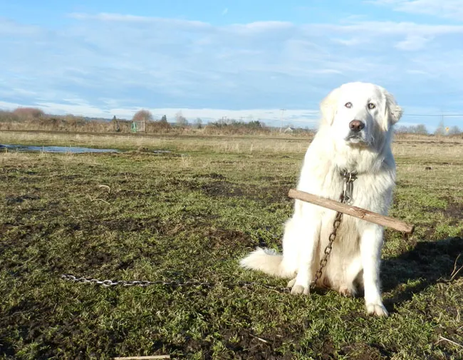
She came to our farm as a pup in 2016, from a very large ranch in Eastern Washington.
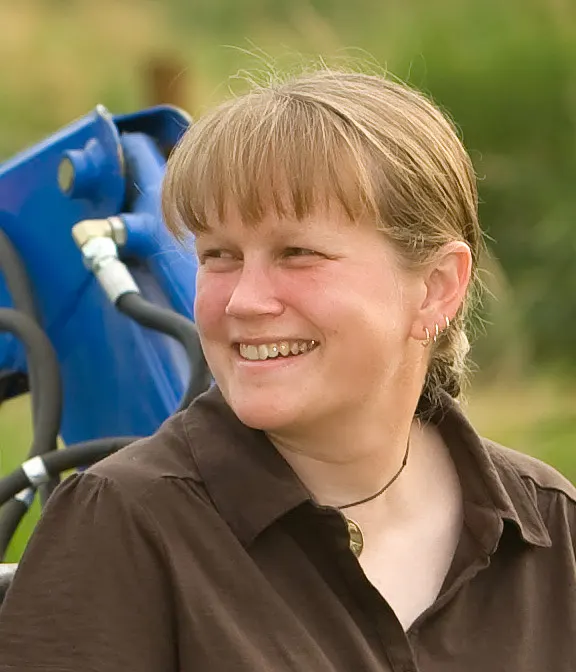
I live on a “smallholding” 37-acre farm in Snohomish, Washington. By day, I am an engineering program manager in the medical device industry. In my free time, I volunteer for several ag-related organizations, teach Lean farming topics, restore my 1929 farmhouse, and go camping with my border collies.
Visitors welcome! By appointment only, please. This is a working farm, and also our home, so it’s hard for us to accommodate drop-ins.
Proposal by Nicolas Masset for Canfield Farms